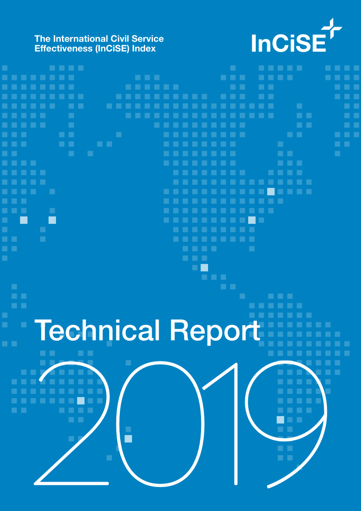

This is an HTML version of the InCiSE 2019 Technical Report, originally published in April 2019.
This report provides a detailed discussion of the methodology behind the InCiSE Index. For the results of the 2019 edition of the InCiSE Index please see the Results Report.
Preface
From 2016 to 2019, the International Civil Service Effectiveness (InCiSE) project was a collaboration between the Blavatnik School of Government and the Institute for Government. It was supported by the UK Civil Service (through the Cabinet Office) and funded by the Open Society Foundations.
The Blavatnik School of Government is re-establishing the InCiSE project with the aim of publishing a new edition of the InCiSE Index in 2024. To support engagement with stakeholders the School is re-publishing the 2019 project outputs (this Technical Report, the Results Report and results dashboard) in more modern and user friendly formats.
This HTML version was made using Quarto.
0.0.1 Differences from the original 2019 publication
Please note, as part of the re-publication of this report into a web format Chapter 3 of the original report has had its constituent sections split into individual chapters to improve readability and navigation. Some typographic errors have been corrected as part of the re-publication of this report. There have also been some changes to the tables and figures when compared to the original report, these are largely for layout purposes (except in the case of one chart where external source data availability has changed). Footnotes have been added to charts, tables and chapters to indicate changes in content and differences in numbering.
You can also download and read the original PDF publication.
To support the future development of the Index a supplementary appendix was published in December 2023, Appendix C, that summarises the data quality results for all countries and territories which have at least one data point in the data sources that were used by the 2019 InCiSE Index.
0.1 Preface to the original report
Two reports have been published covering the 2019 edition of the InCiSE Index:
- The Results Report provides an overview of the overall results of the InCiSE Index, and a summary for each country covered by the Index.
- The Technical Report (this report) provides the methodology of the InCiSE Index, it includes details fo the data sources, transformations, imputation, and weightings.
Users are free to copy, download and print InCiSE content and findings for their own use. Excerpts from InCiSE reports and publications may also be used, but must be appropriately referenced.
The Index is comprised of a variety of other data sources. Reuse is not applicable to data subject to intellectual property rights of third parties. Please refer to other organisations’ corresponding websites and data licensing restrictions to ensure compliance with their data limitations. Details of data sources can be found in the References section at the end of this report. Every effort has been made to adhere to third party data regulations.
0.1.1 Acknoweldgements
Our thanks go to those who have given their time to shape this second publication of the InCiSE Index. This has included substantial contributions made by academics, think-tanks and civil servants, past and present. Thanks also go to those organisations who have allowed us once again to use their data in the InCiSE Index, as well as their ideas and support for the overall project.
0.2 Citation
Please refer to and cite the original PDF publication:
InCiSE Partners (2019) The International Civil Service Effectiveness (InCiSE) Index: Technical Report 2019, Oxford: Blavatnik School of Government, University of Oxford, https://www.bsg.ox.ac.uk/incise
The content of this reproduction is released under the CC-BY-4.0 license.
New content included in this publication (i.e. content not included in the original report, such as Appendix C) is the sole copyright of the Blavatnik School of Government, University of Oxford and is also released under the CC-BY-4.0 license.